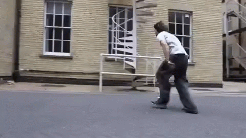
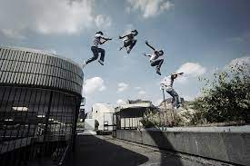

El parkour, es una actividad física basada en la capacidad motriz del individuo, desarrollado a partir del método natural. Los practicantes son denominados traceurs/traceuses y tienen como objetivo trasladarse de un punto a otro del entorno de la manera más sencilla y eficiente posible, adaptándose a las exigencias del mismo con la sola ayuda de su cuerpo. Además, se puede considerar una forma de expresión en cuanto a la libertad, el contacto con todo medio externo y el dominio sobre el propio movimiento natural de cada individuo.
El parkour se practica tanto individual como colectivo en cualquier entorno, no exclusivamente en espacios urbanos. Cada practicante decide hasta qué punto involucrarse en su entrenamiento y cómo enfocarlo. Su práctica implica la adaptación al entorno para superar los diferentes obstáculos presentes en un recorrido.
Se desarrolló en Francia, inicialmente por Raymond Belle y posteriormente por su hijo David Belle y su grupo de amigos, los autodenominados Yamakasi, a finales de los años 1980. La disciplina se popularizó al final de la década de 1990 y al principio de 2000 gracias a películas, documentales y anuncios televisivos protagonizados por los Yamakasi.
Difiere en sus objetivos del freerunning y del ADD. Supone una actividad no competitiva.
Raymond Belle usó el término le parcours para abarcar todo su entrenamiento incluyendo escalada, saltar, correr, equilibrio, y los demás métodos que utilizó en su avance atlético personal. Su hijo, David, desarrolló aún más los métodos de su padre y alcanzó el éxito como especialista de cine. Un día en un set de rodaje mostró su vídeo Man Aire Speed a Hubert Koundé. Koundé sugirió cambiar la "c" de parcours a una "k" porque era más fuerte y más dinámica; de la misma manera, propuso eliminar la "s" muda del final formando el actual término parkour. Suele utilizarse las letras PK como abreviación. El practicante de parkour se llama traceur si es hombre o traceuse si es mujer, términos derivados del verbo francés tracer. Se traducen como trazador y trazadora, en referencia al acto de trazar o hacer un recorrido. Cabe mencionar que el término fue originalmente el nombre de uno de los primeros grupos de practicantes formado por David Belle, Sébastien Foucan y Stephane Vigroux. Desde entonces se ha utilizado como la palabra que define al practicante de parkour.  Una RT (reunión de traceurs o traceuses) refiere a una quedada que hacen los practicantes de parkour para entrenar juntos. En cambio un EC (entrenamiento colectivo) es un entrenamiento de traceurs o traceuses con unos objetivos y unas pautas establecidas que hacen hincapié en el condicionamiento físico. El parkour, también es conocido como el arte del desplazamiento (ADD). Nombre que le dio el grupo Yamakasi a esta disciplina. El lema Ser y durar (del francés: Être et durer) deriva del lema del método natural: "Être forte pour être utile", que significa "Ser fuerte para ser útil". Sébastien Foucan utilizó el término freerunning para denominar el parkour en el Reino Unido, aunque luego se utilizó el nombre para denominar una disciplina cuyo objetivo radica en buscar la belleza del movimiento. 
Se trata del arte del desplazamiento superando obstáculos y dificultades en el camino, tanto físicos como mentales. Puede hacerse en paisajes rurales o en el campo pero la imagen más común es la del «traceur» (nombre que recibe quien practica parkour) superando obstáculos urbanos como muros, vallas o escaleras